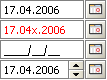
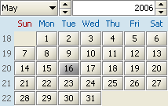
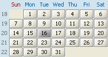
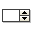

JCalendar
© Kai Toedter 1999 - 2009
Version 1.3.3
05/01/09
Introduction
JCalendar is a Java date chooser bean for graphically picking a date.
JCalendar is composed of several other Java beans, a JDayChooser, a
JMonthChooser and a JYearChooser. All these beans have a locale
property, provide several icons (Color 16x16, Color 32x32, Mono 16x16
and Mono 32x32) and their own locale property editor. So they can
easily be used in GUI builders. Also part of the package is a
JDateChooser, a bean composed of an IDateEditor (for direct date
editing) and a button for opening a JCalendar for selecting the date.
This program is free software; you can redistribute it and/or modify it under the terms of the GNU Lesser General Public License as published by the Free Software Foundation. If you like and use it, just let me know. If you find any errors or things you don't like, please contact Kai Toedter.
Installation
The installation is very easy, just put jcalendar.jar in your class path. If you want to run the JCalendar demos (see below) or just use the great JGoodies Looks Look and Feel, put also looks-1.3.2.jar in your class path. Both are in the lib directory of this JCalendar distribution.
Running the Demos
To run the JCalendar demo applet in your browser, you must have installed the Java Plug-in. Click here to run the applet. If you have the distribution installed locally on your computer, there's several ways to run the demos. To start the JCalendar demo Windows Vista/XP/2000/NT/98 users can just right click the jcalendar.jar and open it with "javaw" or execute the "runJCalendarDemo.bat" batch file in the bin directory of this distribution. For all other operating systems, just put "jcalendar.jar" and looks-1.3.2.jar (both in the lib directory of the distribution) in your class path and start Java to execute the com.toedter.calendar.JCalendarDemo class.
Components
The following table shows a list of used components (all Java Beans). All the screen shots use the great Plastic 3D Look and Feel (included in JGoodies Looks by JGoodies), which is bundled with the JCalendar bean.
Icon 16x16
Icon 32x32
Component
Description




JCalendar allows you to choose a year, a month and a day. Depending on the locale, the month names and the weekday names change. The foreground of "today" is painted red. JCalendar is composed of several other beans described below.

JYearChooser is a JSpinField (see below) that allows you to choose a year by either typing the year in or using the spin buttons to increase or decrease the value.


JMonthChooser is a JComboBox that allows you to choose a month by either using the combo box or the spin buttons. The language of the month names is defined by the locale property.


JDayChooser lets you choose a day by clicking on the day number. Depending on the locale, the weekday names and the first days of the week change. The foreground of "today" is painted red. For navigation you can use the cursor and tab keys.


JSpinField lets you choose a numeric value. Properties for minimum and maximum values are provided. The value can be typed in directly or increased and decreased by the spin buttons. If you have typed in an incorrect value, the foreground color changes to red. Correct values are displayed green. After pressing the enter key the value will be set and displayed black. Since version 1.1.4 the preferred with of the value field is adjusted to the maximum of the width of minimum or maximum.

JLocaleChooser is a JComboBox that allows you to choose a locale. It can be used to test or set the locales of the beans above.
Requirements
All beans use Swing components, so you need to have the Java SE
installed. All beans also work with Java SE 1.4.x and 5.
Download and
Latest Version
You can download a zip file, containing all the sources, libs and
documentation at www.toedter.com/download/jcalendar-1.3.3.zip
(600 KB). Version 1.1.4 is still available at www.toedter.com/download/jcalendar-1.1.4.zip.
Version 1.1.4 works with J2SDK 1.2 and 1.3, since it does not use
JSpinner.
API
Documentation
The complete API documentation is generated with JavaDoc. The API
documentation is available with frames
or without frames.
Bugs and
FeatureRequests
Please file bugs and feature requests at http://max-server.myftp.org/trac/jcalendar.
User Forum
JCalendar has an active user forum: http://www.toedter.com/forum/forum.php.
History
1.3.3:
- Bug fixed when browsing through last days of months
1.3.2:
- Many bug fixes (thanks to all forum posters)
- Min/Max selectable dates now in the date editor interface
- Improvements regarding property change listeners (better null date
support)
- New method "cleanup" in JDateChooser
1.3.1:
- UI & Look & Feel improvements (especially Windows L&F)
- JCalendar supports a date range of selectable dates
- JDayChooser can now limit the number of characters in day Names
(e.g. Mo instead of Mon)
1.3.0:
- Many bug fixes (thanks to all forum posters)
- Better handling of null dates in JDateChooser
- Introduction of the interface IDateEditor
- JTextFieldDateEditor (the default editor) supports custom date
patterns and masks
- JSpinnerDateEditor is an implemantation of IDateEditor based on a
JSpinner
- JDateChooser Table editor (including table demo)
- Both the zip and the jar files contain the version in the name,
e.g. jcalendar-3.1.0.jar
1.2.2:
- Bug in DateChooser.setModel fixed (thanks to Martin Pietruschka)
- NullPointer exception bug on DateChooser.setDate fixed (thanks to
Aleksey Gureev and others).
1.2.1:
- JDateChooser bug fixed (sometimes the date was 1 day ahead of the
selected date, many thanks
to Mark Brown and all the others who reported this bug).
- JDateChooser improvements for better usability in persistence
frameworks like Oracle's ADF/BC4J
(thanks to Mark Brown).
1.2:
- Many small improvements and bug fixes, thanks to many comments of
JCalendar users
- A new JDateChooser bean, which allows to be used as an editable
date field and a calendar image, that pops up a
JCalendar for choosing the date.
- An optional "week of year" panel in JDayChooser
- Better customization of most beans
- Improvements in all BeanInfos
- Bundling with my favorite Look and Feel: JGoodies Looks (www.jgoodies.com)
Awards
This bean won first prize in the beans contest of the International
Java Club. JCalendar was rated top25% by JARS (, 856 out
of 1000).